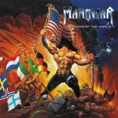

|
|
||
Manowar : Warriors of the World (2002) |
|  http://www.manowar.com/ |
1. Call to Arms 5:31 |
9/10 |
|
Seis años hemos tenido que esperar desde que Manowar sacara el "Louder than Hell" para volver a tener un álbum de la banda, pero por fin la espera ha terminado. "Warriors of the World" es el último disco de los autodenominados reyes del metal y a pesar del tiempo transcurrido siguen fieles a si mismos: los gritos de Eric Adams, la temática de las canciones, la estética del álbum, los coros épicos, la batería que en ocasiones es casi un instrumento melódico más, todo nos recuerda a los Manowar de siempre. En suma un fantástico trabajo, bastante mejor que el "Louder than Hell" y que reúne muchas de las cosas que han hecho de Manowar uno de los máximos representantes del auténtico heavy metal. "Call to Arms" es una de esas canciones con un ritmo que captura la voluntad y te mete de lleno en el disco. Tiene coros, gritos, cambios de ritmo, y todos los elementos que convierten a una canción en un auténtico himno de batalla. "The Fight for Freedom" comienza despacio, con la voz de Eric acompañada del piano, pero pronto entran la batería, con gran protagonismo en esta canción, y después la guitarra y los coros, construyendo un gran tema con un estribillo memorable. "Nessun Dorma" es un tema de Puccini donde la voz de Eric Adams tiene espacio para brillar con luz propia. "Valhalla", un cortito tema instrumental, bastante pomposo, da paso a "Swords in the Wind", un tema que tiene dos partes, una primera más suave, y una segunda parte más contundente, ambas igua de emotivas y con un estribillo muy pegadizo. La sexta pista, "An American Trilogy", es un tributo a Elvis Presley en el 25 aniversario de su muerte (si es que de verdad está muerto, claro... ;-) que es una combinación de "Dixie" y "Battle Hymn of the Republic", los himnos del sur y el norte durante la guerra civil norteamericana, junto a una oración tradicional por los muertos de guerra. "The March" es una instrumental, orquestal y con coros, y con un final realmente apoteósico. "Warriors of the World United" es otro tema típico de Manowar: ritmo pegadizo, no muy rápido pero si contundente, la voz de Eric demostrando que sus gritos son difíciles de superar, coros y un estribillo difícil de olvidar. La novena canción, "Hand of Doom" es quizás el tema más rápido y potente del álbum: tanto la batería como la guitarra vuelan en la parte rítmica, y ésta última mucho más en el impresionante solo. "House of Death" no se queda atras respecto a la canción anterior ni en potencia ni en velocidad. Un estribillo infernal, una parte central lenta y tenebroso, y un final terrorífico le otorgan un estilo muy especial. "Fight Until we Die" cierra el álbum con más fuerza y velocidad, un solo de guitarra brillante, y más gritos increíbles. Un gran final, digno de los mejores Manowar. | ||
Rubén Béjar | ||